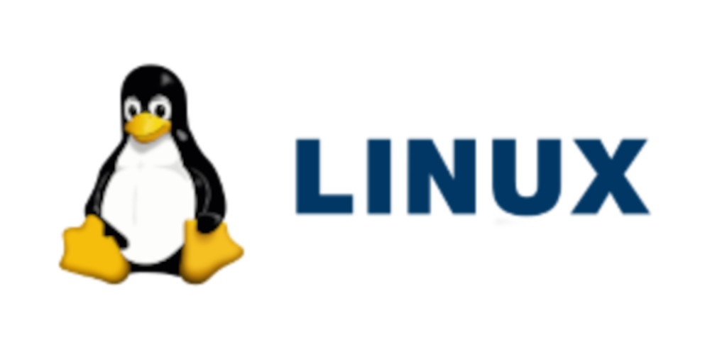

🐧 A História do Linux
Tudo aquilo que você sempre quis saber sobre o sistema que revolucionou o mundo do código aberto Diferente do Windows e do macOS, o Linux não nasceu dentro de uma grande empresa com fins comerciais. Ele surgiu como um projeto pessoal, criado por um estudante universitário que queria desenvolver seu próprio sistema operacional. Com o tempo, essa iniciativa se transformou em um dos maiores projetos colaborativos da história da tecnologia.
👨💻 O Criador
O Linux foi criado por Linus Torvalds em 1991, quando ele era estudante da Universidade de Helsinque, na Finlândia. Linus tinha um interesse profundo por sistemas operacionais e queria criar algo que fosse mais flexível e Na época, Linus utilizava um sistema chamado Minix para estudos, mas achava suas limitações técnicas frustrantes. Decidiu então desenvolver seu próprio núcleo de sistema operacional como um projeto pessoal. O que começou como um experimento rapidamente ganhou atenção na internet. Linus publicou o código do projeto em fóruns e convidou outros programadores a contribuir. Esse modelo aberto de desenvolvimento foi decisivo para o crescimento do Linux.
🧠 O Que é o Linux, de Fato?
Tecnicamente, Linux é apenas o “kernel”, ou seja, o núcleo do sistema operacional. O kernel é responsável por gerenciar o hardware, memória, processos e comunicação entre os componentes do computador. Para se tornar um sistema completo, o kernel Linux foi combinado com ferramentas do projeto GNU, criado por Richard Stallman. Por isso, muitos defendem o nome “GNU/Linux”, destacando essa parceria essencial. Essa união criou um sistema operacional totalmente livre e de código aberto, permitindo que qualquer pessoa pudesse estudar, modificar e distribuir o software.
🌍 A Expansão pelo Mundo
Nos primeiros anos, o Linux era utilizado principalmente por entusiastas e programadores. Porém, sua estabilidade e segurança chamaram a atenção de empresas e universidades. Com o tempo surgiram as chamadas “distribuições Linux”, que são versões completas do sistema com diferentes interfaces e ferramentas. Entre as mais conhecidas estão: Ubuntu, conhecida por ser amigável para iniciantes Debian, famosa pela estabilidade Fedora, voltada para tecnologias mais recentes Arch Linux, popular entre usuários avançados Cada distribuição possui sua própria filosofia, mas todas compartilham o mesmo núcleo Linux.
🏢 Linux no Mundo Corporativo
Embora muitas pessoas associem o Linux apenas a programadores, ele domina áreas extremamente importantes da tecnologia moderna. Grande parte dos servidores da internet roda Linux. Plataformas de nuvem, supercomputadores e sistemas bancários utilizam o kernel Linux devido à sua estabilidade e segurança. Empresas como a IBM, Google e Red Hat investem fortemente no desenvolvimento do Linux. A Red Hat, inclusive, construiu um modelo de negócios bilionário oferecendo suporte corporativo para distribuições baseadas em Linux. O sistema também está presente no Android, o que significa que bilhões de smartphones utilizam o kernel Linux diariamente, mesmo que os usuários não percebam.
🛠️ Evolução Técnica
Ao longo das décadas, o Linux evoluiu para suportar uma enorme variedade de arquiteturas de hardware. Ele pode rodar em computadores pessoais, servidores, dispositivos embarcados, roteadores e até eletrodomésticos inteligentes. O desenvolvimento do Linux é coordenado pela Linux Foundation, organização que supervisiona o crescimento do projeto e promove colaboração entre empresas e desenvolvedores independentes. Diferente de sistemas proprietários, o Linux recebe atualizações constantes vindas de uma comunidade global. Milhares de desenvolvedores contribuem com melhorias de segurança, desempenho e compatibilidade.
🔐 Filosofia e Código Aberto
O grande diferencial do Linux está em sua filosofia. Ele é distribuído sob a licença GPL, que garante liberdade para usar, estudar, modificar e redistribuir o software. Essa filosofia permitiu que governos, universidades e empresas adaptassem o sistema às suas necessidades específicas. Em muitos países, o Linux é adotado em instituições públicas justamente por não exigir pagamento de licenças comerciais. O modelo de desenvolvimento colaborativo também aumenta a transparência. Como o código é aberto, falhas de segurança podem ser analisadas e corrigidas por qualquer pessoa capacitada.
📌 Curiosidades e Informações Extras
O mascote oficial do Linux é um pinguim chamado Tux. A escolha surgiu após Linus Torvalds comentar que gostava de pinguins, e a ideia acabou sendo adotada oficialmente. Linus Torvalds ainda participa ativamente do desenvolvimento do kernel, supervisionando mudanças importantes. Ele é conhecido por seu estilo direto e exigente na análise de contribuições. Outra curiosidade pouco mencionada é que o Linux nunca teve uma grande campanha publicitária como o Windows 95 ou os produtos da Apple. Seu crescimento foi orgânico, impulsionado pela comunidade e pela qualidade técnica. Hoje, mesmo usuários que nunca instalaram uma distribuição Linux provavelmente utilizam tecnologias baseadas nele, seja em servidores, dispositivos móveis ou sistemas embarcados.
